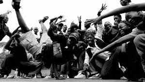
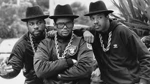
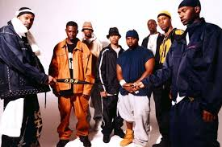
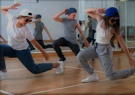

Storia sul hip hop e la sua cultura
La danza hip hop nasce negli anni ’70 nel New York City, in particolare nel quartiere del Bronx, come parte della cultura hip hop, che comprendeva anche rap (MCing), DJing e graffiti writing.
Origini anni ’70
La cultura hip hop nasce negli anni ’70 nel Bronx durante feste di quartiere organizzate da DJ come DJ Kool Herc. Nei block party i giovani ballavano sui “break” musicali, creando il breaking (breakdance). I B-boys e le B-girls svilupparono movimenti acrobatici a terra e passi dinamici in piedi.

Evoluzione anni ’80
Negli anni ’80 la danza hip hop si diffonde grazie ai media e ai film come Flashdance e Beat Street, che portano il breaking e lo stile street a livello internazionale. In questo periodo nascono anche altri stili legati alla cultura funk della West Coast, come popping e locking.

Evoluzione anni ’90
Negli anni ’90 l’hip hop entra nell’industria musicale e televisiva. I videoclip musicali e programmi come Yo! MTV Raps contribuiscono alla sua diffusione globale. La danza si evolve integrando nuovi movimenti, influenze jazz e contemporanee, diventando più coreografica e presente nei palcoscenici.

Hip hop oggi
Oggi la danza hip hop è diffusa in tutto il mondo, praticata sia nelle competizioni sia nei teatri. Dal 2024 il breaking è diventato disciplina olimpica ai Giochi Olimpici di Parigi 2024, ottenendo un importante riconoscimento ufficiale.
